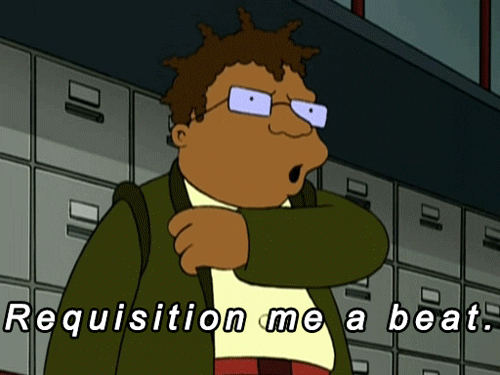

Notes
Introduction to my notes
Hello Stress my old friend. I've come to live with you again. It took me till Friday to get my book key! Fortunately this weeks readings did not require it. So I managed to luck out on that end. After reviewing my course expecations I discovered that they expect me to report on my readings and work by using VS Code as a sort of note pad. this will be a bit annoying but what ever. I can adapt and move on.
Either way it's been a while sice I have worked in Javascript this in depth and doing this while studying Web Backend and Database design and development, and intro to database all at once is going to be fun.
The Reading
The author of this book is very fasinated with the early HTML Cowboys blazing a trail and coming up with various tags. Followed along with project. See below
Unit Project
Story EditorScrum Questions
- What did I do since the last meeting?
- There was no last meeting this is the first week. That said all objectives met!
- What am I going to do next?
- Requestion a beat and rock work though the next week. Keeping the momentum up while focusing on coding examples to get hands in there.
- 
- What are my blockers?
- Inefficient Bug hunting and Squashing
- Stress Management.
- Over reliance on Google